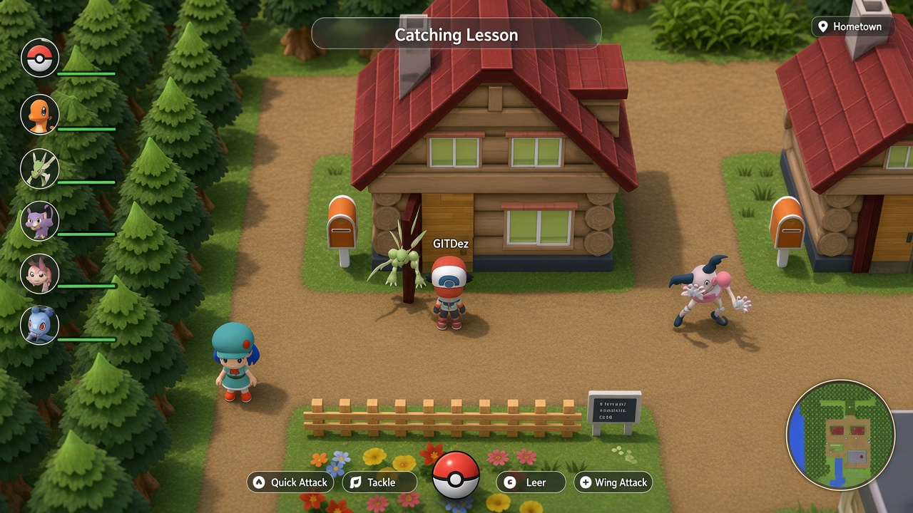
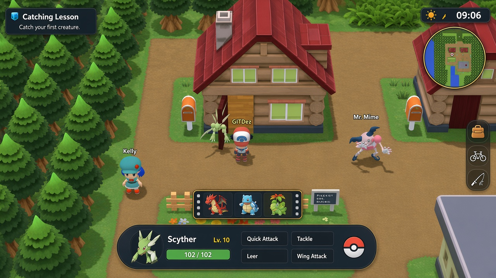
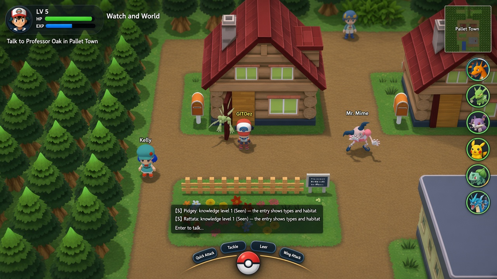

What to drop
The left debug/stats sheet and the always-open chat. They make every screenshot look like a tool, not a game.
What the mockup gets right
Quest is visible. The active partner’s moves sit on a bottom dock. Shortcuts exist. Trainer status is glanceable.
What the mockup overdoes
Six named party cards plus a full-width top bar plus a right tool column. The town becomes a postage stamp.
Quiet Overworld

Party is six dots on the left, not cards. Quest is one chip, not a banner. Moves and the ball share a short dock. Minimap sits on the bottom-right so it stops fighting the sky. Chat only opens on Enter. This is the layout I would ship first: the town stays the picture.
Command Island

One island at the bottom owns combat: active partner, four moves, ball. The rest of the team is a three-portrait filmstrip you rotate (same idea as Shift+Z today, just visible). Quest becomes a small card, not a strip. Use this as the battle / targeted state of Quiet Overworld, not a second game.
Watch and World

Trainer status is a watch, not a banner. Party lives on the right as HP rings so the left stay of the house stays clear. Moves only appear as a half-ring around the ball when you have a target. Heavier than A, lighter than the mockup. Good if you miss the trainer XP bar.
How I would phase it
Ship Quiet Overworld as the default. When you lock a wild Pokémon or enter a trainer fight, the dock grows into Command Island. F8 still opens the current GM sheet. Chat stays a slide-over, not a permanent pane. Do not implement the mockup’s left party wall — it will always win against the 3D scene.